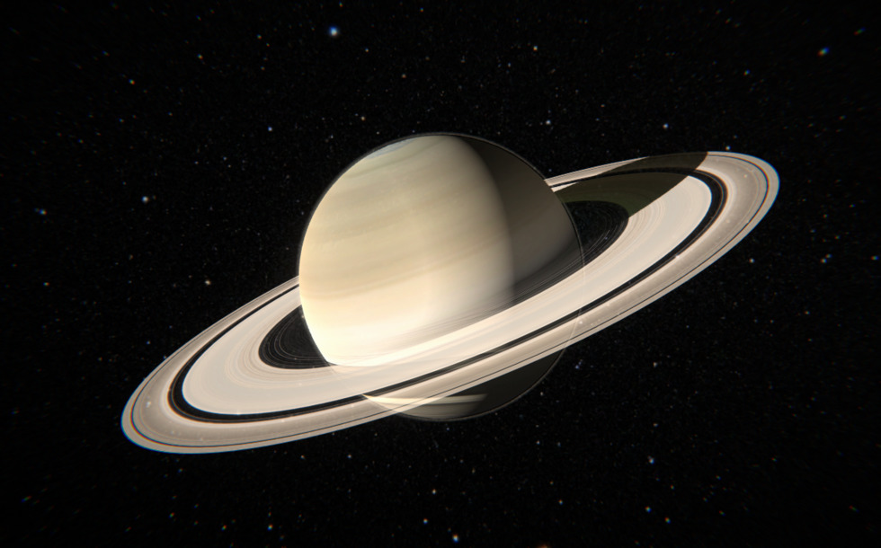

ดาวเสาร์ (Saturn)

ฟิสิกส์ของวงแหวนและขีดจำกัดของโรช (Roche Limit): วงแหวนของดาวเสาร์ไม่ได้เป็นแผ่นแข็ง แต่ประกอบด้วยอนุภาคน้ำแข็งบริสุทธิ์ (99%) ที่มีขนาดตั้งแต่เม็ดทรายไปจนถึงก้อนหินขนาดเท่าบ้าน วงแหวนเหล่านี้ตั้งอยู่ภายใน "ขีดจำกัดของโรช" ซึ่งเป็นระยะที่แรงไทดัล (Tidal Force) หรือแรงดึงดูดต่างระดับของดาวเสาร์มีความรุนแรงมากจนดึงวัตถุขนาดใหญ่ (เช่น ดวงจันทร์โบราณ) ให้แตกสลายกลายเป็นเศษเล็กเศษน้อย และไม่สามารถรวมตัวกลับเป็นดวงจันทร์ได้อีก
ดวงจันทร์ต้อนแกะ (Shepherd Moons): วงแหวนมีช่องว่างหลายจุด (เช่น ช่องว่างแคสสินี) เกิดจากอิทธิพลของแรงโน้มถ่วงจากดวงจันทร์บริวารขนาดเล็กที่โคจรอยู่ใกล้ ๆ หรืออยู่ภายในวงแหวน เช่น ดวงจันทร์ พาน (Pan) และ ดัฟนิส (Daphnis) ดวงจันทร์เหล่านี้ทำหน้าที่เหมือน "คนเลี้ยงแกะ" คอยใช้แรงดึงดูดต้อนเศษน้ำแข็งให้อยู่ในแนวระเบียบและปัดกวาดช่องว่างให้สะอาด
ดาวเคราะห์ที่ "แบน" ที่สุด (Oblateness): ดาวเสาร์มีความหนาแน่นต่ำที่สุดในระบบสุริยะ (\(0.69\text{ g/cm}^3\) น้อยกว่าน้ำ) ประกอบกับการหมุนรอบตัวเองที่เร็วมาก (ประมาณ 10 ชั่วโมงครึ่ง) ทำให้แรงหนีศูนย์กลางดันเนื้อแก๊สบริเวณเส้นศูนย์สูตรให้โป่งออกอย่างชัดเจน ส่งผลให้เส้นผ่านศูนย์กลางแนวเส้นศูนย์สูตรยาวกว่าแนวขั้วเหนือ-ใต้ถึง 10% มองเห็นเป็นทรงกลมแป้นอย่างชัดเจนจากกล้องโทรทรรศน์